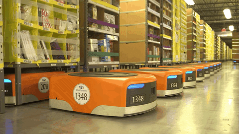
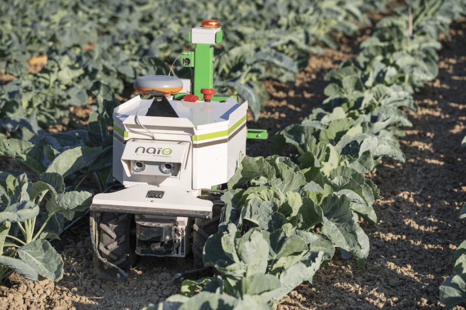
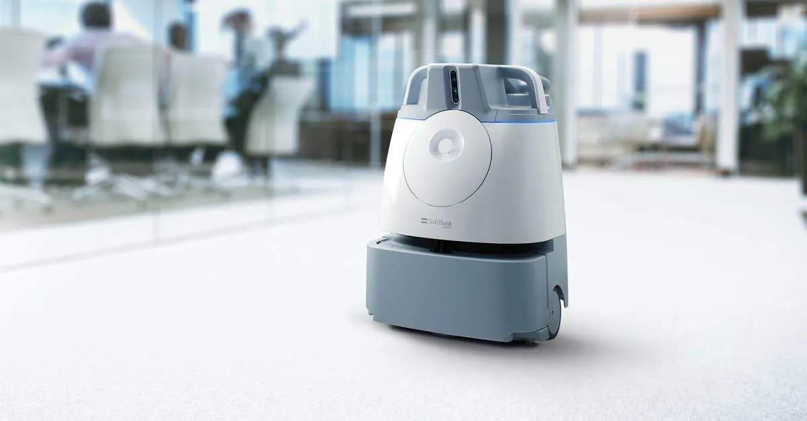

What are Autonomous Mobile Robots?
Autonomous Mobile Robots (AMRs) are self-propelled vehicles equipped with advanced sensors, computer vision systems, and artificial intelligence algorithms that enable them to navigate and operate independently without human control.
Unlike traditional robots confined to fixed locations, AMRs can move freely through dynamic environments while avoiding obstacles and optimizing their paths in real-time.

How Do AMRs Operate?
- 01/ Equipped with advanced sensors (light detection, lidar, cameras, GPS, and machine learning algorithms) to build a real-time 360-degree understanding of their surroundings
- 02/ Process data instantly with onboard computing hardware, enable real-time decisions, and adapt to changes in their surroundings
- 03/ Navigate independently without fixed tracks, adjusting their path automatically to avoid obstacles, and maintain continuous operation
- 04/ Work safely alongside humans, replace repetitive tasks, and shift workers to focus on more strategic tasks
Key Capabilities
Obstacle Avoidance
Advanced sensors detect and navigate around obstacles in real-time, ensuring safe operation in dynamic environments.
Multi-Robot Coordination
Fleet management systems enable seamless cooperation between multiple AMRs for complex tasks and optimization.
Battery Intelligence
Smart power management ensures optimal runtime and autonomous return to docking stations.
Path Optimization
AI algorithms calculate efficient routes, reducing travel time and energy consumption significantly.
Real-Time Monitoring
Cloud dashboards provide complete visibility into robot status, location, and performance metrics.
Adaptive Learning
Machine learning models continuously improve navigation and decision-making over time.
Real-World Applications
Oz by Naio Technologies
- Autonomously weeds rows of crops without damaging plants
- Uses precise row navigation
- Reduces the need for chemical herbicides
- Commonly used in small farms for vegetable crops

Moxi by Diligent Robotics
- Transports medication, lab samples, and supplies in hospitals
- Uses a robotic arm and sensors for navigation and delivery
- Reduces nurse workload
- Allows staff to prioritize direct patient care
Whiz by SoftBank Robotics
- Uses AI-powered navigation to map and clean floors autonomously
- Detects obstacles and people for safe operation
- Commonly used in airports, hotels, and offices

Industrial Impact
Transition from Manual Labour
Factories are transitioning from manual labour to automated robots, revolutionizing production processes.
Peak Efficiency & Accuracy
Manufacturers prefer AMRs to run at peak efficiency and accuracy, maximizing output and quality control.
Cost & Time Savings
AMRs reduce labour costs by 40% and shorten construction time by 25%, providing significant financial returns.
Operational Transformation
Businesses are transitioning from rigid, manual operations to flexible, efficient solutions enabled by AMR technology.
Advantages & Challenges
✓ Advantages
- Adaptable to any environment
- Navigates best routes
- Takes on repetitive tasks
- Ensures safety standards
- Better long-term investment
✕ Challenges
- Implementation requires more infrastructure
- Requires good WiFi and bandwidth (preferably 5G)
- Integration costs are high
- Moves slowly and needs charging
- Interoperability issues for customers
Challenges & Future Directions
Current Challenges
While AMR technology has advanced tremendously, establishing comprehensive safety regulations, improving computational power, designing intuitive human-robot interfaces, and reducing costs remain key focus areas for industry innovation.
Looking Ahead
The future of autonomous mobile robots will likely see increased integration with IoT systems, more sophisticated AI models, greater autonomy in complex and unpredictable environments, and expanded applications across industries.
Emerging Capabilities and Applications
- AI and Machine Learning: Will enable greater autonomy and real-time decision making
- Expanded Scope: Expansion beyond transportation and into monitoring, data collection, and decision support
- Interconnectedness: Increased interconnectedness between robots and enterprise systems
- Business Impact: Greater reliance by businesses to improve efficiency, accuracy, and flexibility
Learn More About the Robots
Watch this engaging video to see autonomous mobile robots in action

→ Click to watch on YouTube